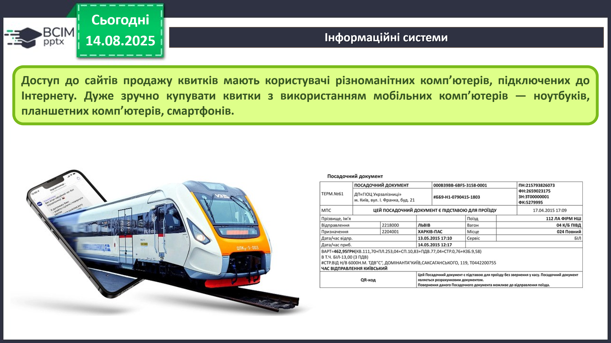
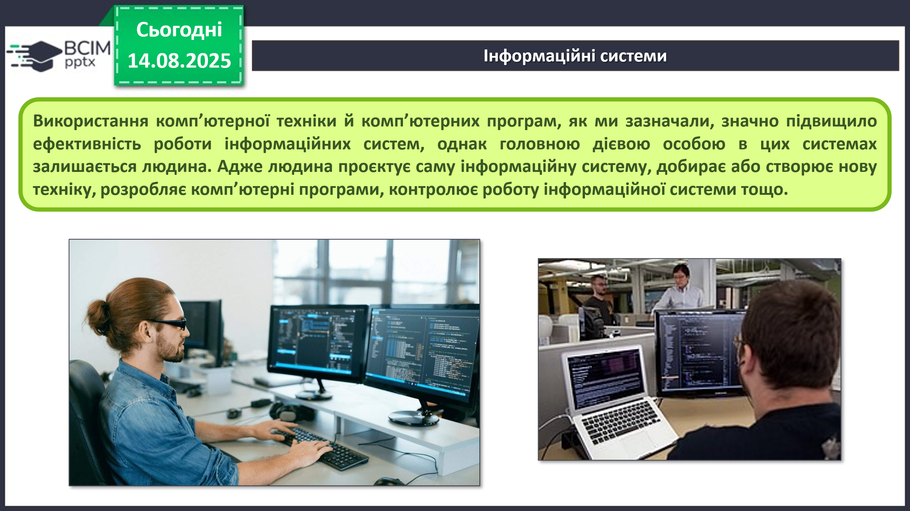
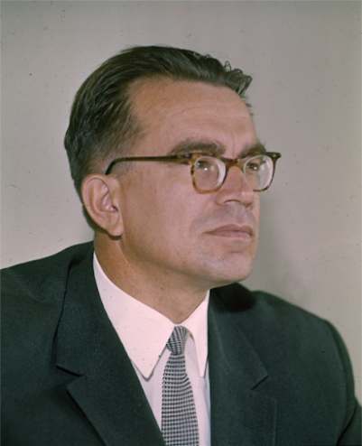
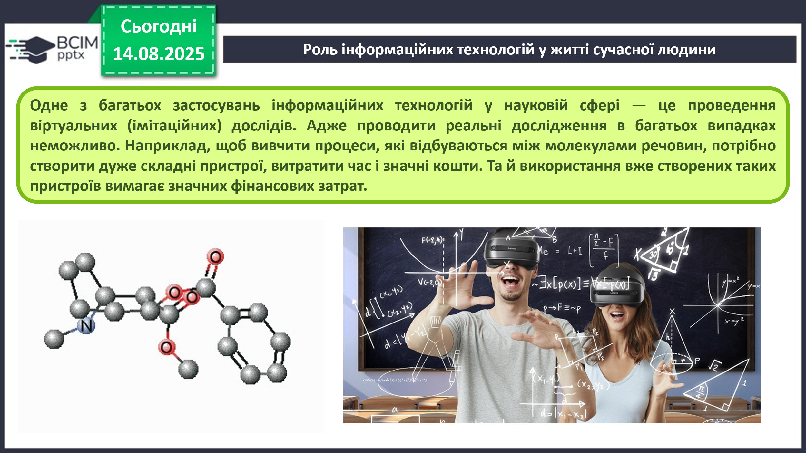
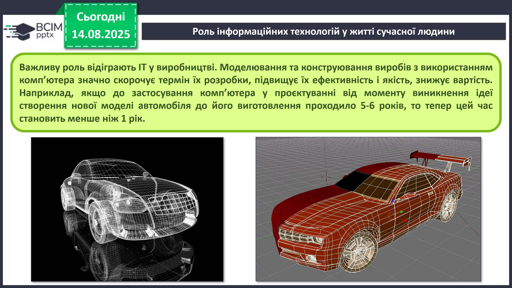
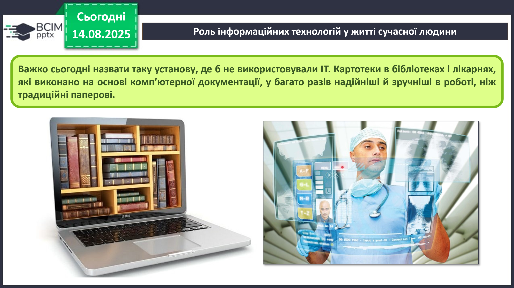

HUB 56 · 5 клас · Урок №5
Інформаційні системи. Інформаційні технології
Роль інформаційних технологій у сучасному житті людини.
Що таке інформаційна система
Система — сукупність частин, пов’язаних спільним призначенням або дією.
Інформаційна система — система, що забезпечує здійснення інформаційних процесів: передавання, опрацювання та зберігання повідомлень.
Розглянемо систему продажу залізничних квитків. Працівники залізниці передають до центрального комп’ютера відомості про маршрути, вагони, місця та вартість квитків. Програма опрацьовує і зберігає ці дані. Касир або пасажир надсилає запит, система показує вільні місця, а після придбання позначає вибране місце як зайняте.

Іншими прикладами інформаційних систем є система керування польотами літаків, служба прогнозування погоди, бібліотека, служба новин і довідкові системи.
Складові комп’ютеризованої інформаційної системи
Основними складовими комп’ютеризованої інформаційної системи є:
- технічні пристрої — використовуються для передавання, зберігання та опрацювання повідомлень;
- комп’ютерні програми — задають порядок виконання інформаційних процесів;
- людина — проєктує систему, добирає або створює техніку, розробляє програми та контролює роботу.


Учений наголошував: автоматичні помічники допомагатимуть людині пізнавати світ, але найважливіше в мисленні й пізнанні завжди належатиме людині.
Технологія та інформаційні технології
Технологія — відомості про послідовність виконання дій під час виготовлення об’єкта, а також про потрібні матеріали, інструменти та обладнання.
Існують технології догляду за рослинами, виготовлення телевізора, книжки чи виробу з паперу, продажу товарів та багато інших.
Інформаційні технології (ІТ) описують особливості здійснення інформаційних процесів з використанням комп’ютерної техніки. Розрізняють технології опрацювання текстів, графічних зображень, числових даних, звуку, відео та передавання даних комп’ютерними мережами.
Замість терміна «інформаційні технології» часто вживають термін інформаційно-комунікаційні технології (ІКТ).
Роль ІТ у сучасному житті
Інформаційні технології використовують у науці, промисловості, торгівлі, управлінні, банківській системі, освіті, медицині, транспорті, зв’язку, сільському господарстві та багатьох інших галузях.
Наука
Віртуальні (імітаційні) досліди допомагають вивчати процеси, для яких реальний експеримент складно, дорого або неможливо провести. Комп’ютерна модель дає змогу прогнозувати можливі наслідки.

Виробництво
Комп’ютерне моделювання та конструювання скорочує термін розробки виробів, підвищує їхню якість і знижує вартість. Розробка нової моделі автомобіля, що раніше тривала 5–6 років, тепер може тривати менше року.

Установи, медицина й освіта
Електронні картотеки бібліотек і лікарень надійніші та зручніші за паперові. Комп’ютер допомагає бухгалтеру швидко виконувати обчислення, банкіру — працювати з рахунками, лікарю — опрацьовувати медичні дані, а учням — навчатися з різних джерел.

Основні напрями застосування ІТ
- обчислення, що потребують значних затрат часу;
- створення комп’ютерних моделей і проведення комп’ютерних дослідів;
- забезпечення роботи автоматів і роботів;
- зберігання та опрацювання великих обсягів даних;
- швидкий обмін даними;
- керування промисловою та побутовою технікою;
- підтримка вивчення навчальних предметів;
- організація дистанційного навчання.